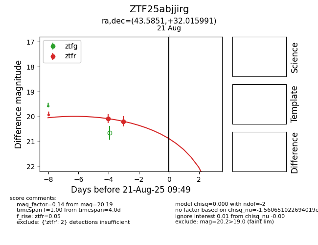

Target ZTF25abjjirg at 2025-08-21 09:49, see:
FINK: fink-portal.org/ZTF25abjjirg
Lasair: lasair-ztf.lsst.ac.uk/objects/ZTF25abjjirg
ALeRCE: alerce.online/object/ZTF25abjjirg
alt names
ZTF25abjjirg (ztf,alerce)
coordinates:
equatorial (ra, dec) = (43.5851,+32.01599)
galactic (l, b) = (151.2432,-24.01324)
photometry
last ztfr=20.19
2 ztfr detections
